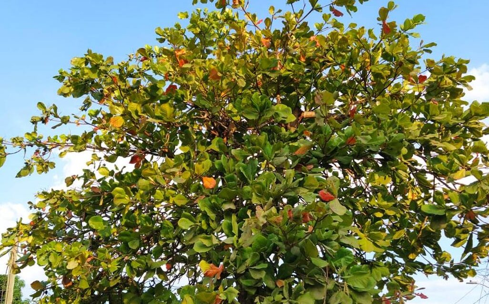
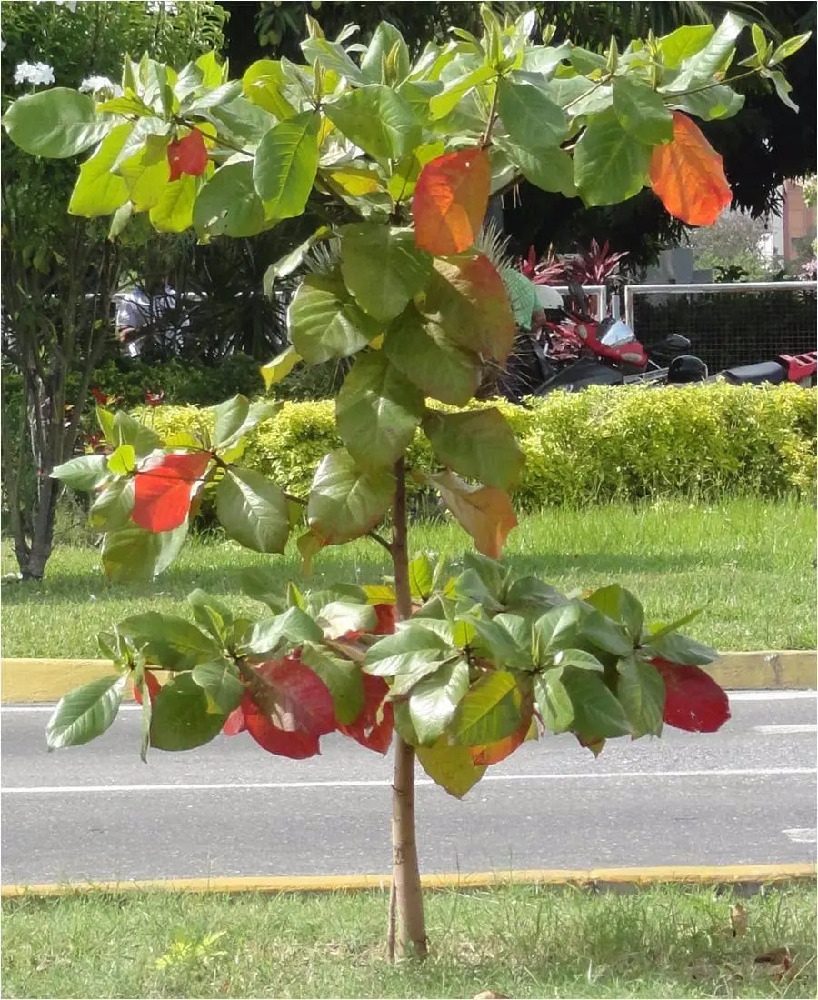
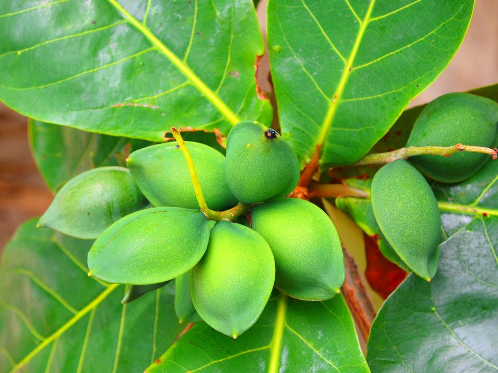

El árbol de almendra tropical es conocido por su gran sombra, sus hojas amplias y su importancia para el medio ambiente. Este sitio fue creado para ayudar a conocerlo y aprender cómo cuidarlo correctamente.
Aprender Más
Características del árbol de almendra tropical

El árbol de almendra puede alcanzar gran altura y generar una copa amplia que proporciona abundante sombra.

Sus hojas son grandes, brillantes y cambian de color antes de caer.
Produce frutos ovalados que contienen la almendra en su interior.
Aspectos importantes para mantenerlo saludable
Debe regarse constantemente durante sus primeros meses, evitando excesos de agua.
Necesita abundante luz solar para crecer fuerte y saludable.
Debe plantarse en un suelo fértil y con buen drenaje.
Retirar ramas dañadas ayuda a mantener un crecimiento adecuado.
Etapas principales de desarrollo
Todo comienza con la siembra en tierra fértil y húmeda.
Comienzan a aparecer pequeñas hojas verdes.
Necesita riego frecuente y bastante luz solar.
Proporciona sombra, oxígeno y beneficios al ecosistema.
Beneficios del árbol de almendra
Ayuda a absorber dióxido de carbono y producir oxígeno.
Su copa amplia ayuda a disminuir el calor.
Sirve de refugio para aves e insectos.
Los árboles ayudan a mantener el equilibrio ecológico.